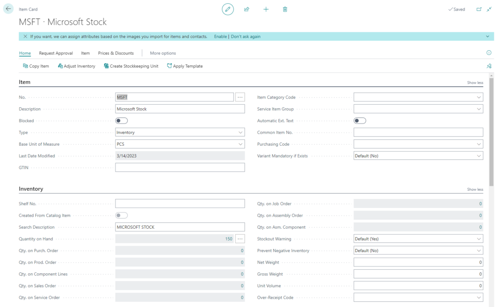
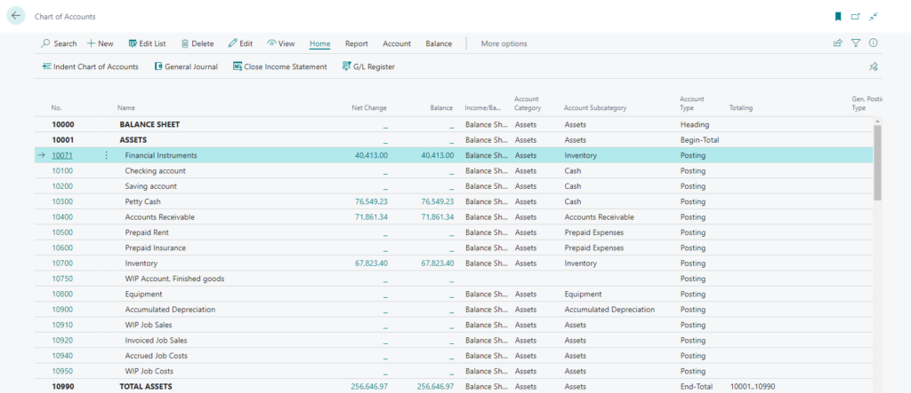
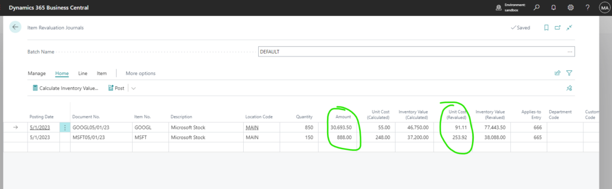
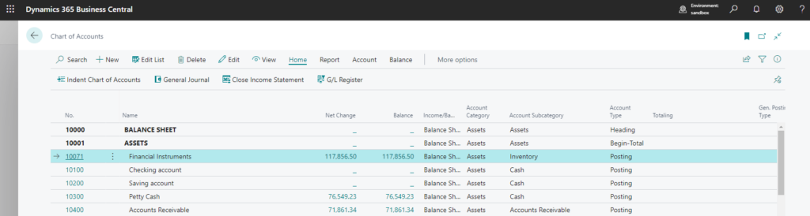
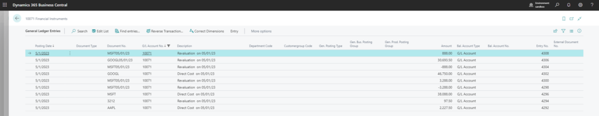

A way to manage Financial Instruments (ETF’s, Stocks etc) in Business Central and keep their values up-to-date automatically
I wanted to find a way to track the values of the different financial instruments my company owns. For example my company can own stocks, ETF’s, options etc and their value will fluctuate because they are listed in the stock market.
These instruments must be a asset in my books and I want to keep their values up-to-date daily.
How I achieved this:
All stocks are described as inventory items with standard cost in Business Central. Item No. is the stock indicator.
For example MSFT Stock:

In my chart of accounts I have separate account for these assets:

Now what happens is when I make inventory adjustment or purchase for these assets they will show up in my balance sheets as assets.
But how do I keep track of their daily value change?
For this I can create a report which will fetch the stock values from Yahoo Finance API and I could create a report that I can schedule to run daily
report 52221"Financial Instruments Reval."
{
UsageCategory = ReportsAndAnalysis;
Caption = 'Financial Instruments Revaluation';
ApplicationArea = All;
ProcessingOnly = true;
dataset
{
dataitem(Item; Item)
{
DataItemTableView = where("Financial Instrument" = const(true), Blocked = const(false));
trigger OnAfterGetRecord()
var
CalcInvtValue: Report"Calculate Inventory Value";
StockPriceEndpointBaseUrl: Label 'https://query1.finance.yahoo.com/v11/finance/quoteSummary/';
Modules: Label '?modules=financialData';
StockPriceEndPoint: Text;
HttpClient: HttpClient;
JsonObject: JsonObject;
HttpResponseMessage: HttpResponseMessage;
HttpResponseText: Text;
CurrentPrice: Decimal;
JsonToken: JsonToken;
Item2: Record Item;
ItemJnlLineTemp: Record"Item Journal Line" temporary;
ItemJnlLine: Record"Item Journal Line";
begin
StockPriceEndpoint := StockPriceEndpointBaseUrl + Item."No." + Modules;
if HttpClient.Get(StockPriceEndpoint, HttpResponseMessage) then begin
if HttpResponseMessage.Content.ReadAs(HttpResponseText) then begin
if JsonObject.ReadFrom(HttpResponseText) then begin
if JsonObject.Get('quoteSummary', JsonToken) then begin
if JsonToken.AsObject().Get('result', JsonToken) then begin
if JsonToken.AsArray().Get(0, JsonToken) then begin
if JsonToken.AsObject().Get('financialData', JsonToken) then begin
if JsonToken.AsObject().Get('currentPrice', JsonToken) then begin
if JsonToken.AsObject().Get('raw', JsonToken) then begin
CurrentPrice := JsonToken.AsValue().AsDecimal();
Item2.SetRange("No.", Item."No.");
CalcInvtValue.SetTableView(Item2);
ItemJnlLineTemp."Journal Batch Name" := 'DEFAULT';
ItemJnlLineTemp."Journal Template Name" := 'REVALUATIO';
CalcInvtValue.SetItemJnlLine(ItemJnlLineTemp);
CalcInvtValue.InitializeRequest(WorkDate(), Item."No." + Format(WorkDate()), true, 0, false, false, false, 0, false);
CalcInvtValue.UseRequestPage := false;
CalcInvtValue.Run();
ItemJnlLine.SetRange("Item No.", Item."No.");
ItemJnlLine.SetRange("Journal Template Name", 'REVALUATIO');
ItemJnlLine.SetRange("Journal Batch Name", 'DEFAULT');
if ItemJnlLine.FindSet() then
repeat
ItemJnlLine.Validate("Unit Cost (Revalued)", CurrentPrice);
ItemJnlLine.Modify(true);
until ItemJnlLine.Next() = 0;
end;
end;
end;
end;
end;
end;
end;
end;
end;
end;
}
}
}What this report does is:
- Checks all items that are marked as “Financial Instrument”
- Fetch their latest value from Yahoo API
- Suggest Revaluation Journal lines based on latest stock values
- I can then post the Revaluation Journals
Now I have the latest valuation of my stock:

And after I post them I have the correct inventory value for my financial instruments:


Hope this idea helps someone’s company to keep their financial assets values up-to-date.